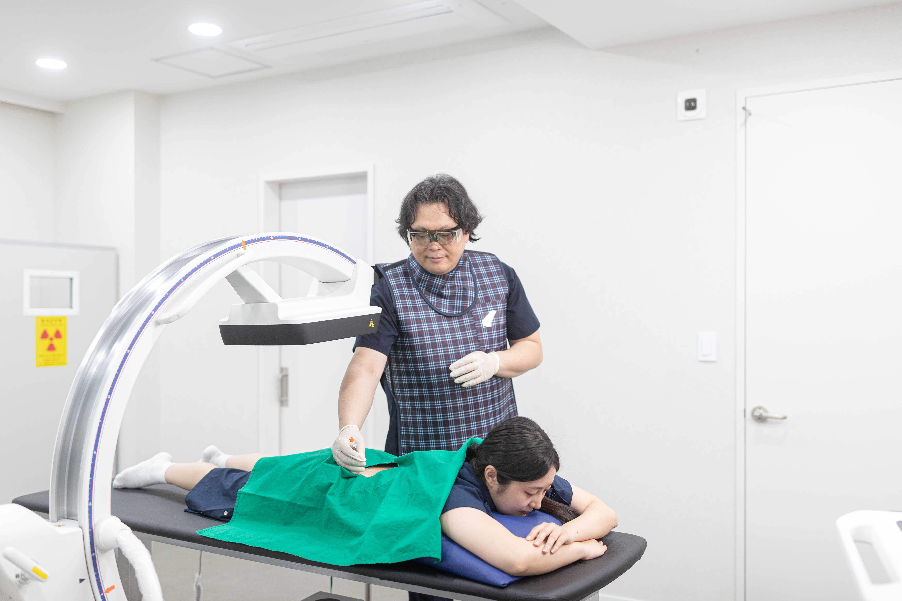
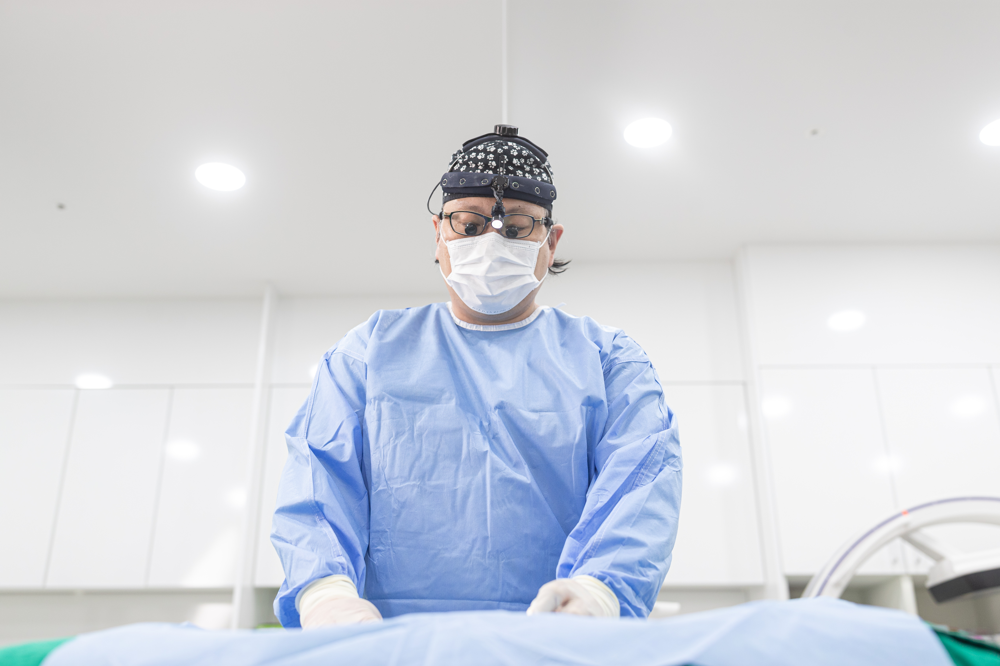

비절개 골절 수술이란?
적합한 골절에서 피부를 크게 열지 않고 뼈의 위치를 맞추는 폐쇄정복과 필요 시 경피적 핀 고정 등을 포함하는 치료입니다.
골절 형태와 안정성에 따라 적용 여부가 달라지며 정확한 평가가 필요합니다.
피부를 크게 열지 않고 뼈의 위치를 맞춘 뒤
필요에 따라 작은 피부 통로로 핀을 넣어 고정합니다.

적합한 골절에서 피부를 크게 열지 않고 뼈의 위치를 맞추는 폐쇄정복과 필요 시 경피적 핀 고정 등을 포함하는 치료입니다.
골절 형태와 안정성에 따라 적용 여부가 달라지며 정확한 평가가 필요합니다.

골절 형태와 안정성에 맞는 고정 방법을 선택합니다.
당일 퇴원 여부는 수술 후 회복 상태에 따라 결정합니다.
골절 위치와 어긋남, 정복 후 안정성을 함께 확인합니다.
피부를 크게 열지 않는 방법의 적용 여부는 골절 상태에 따라 달라집니다.
고정·핀 부위 관리와 체중 부하·움직임은 의료진 지침을 따르세요.
정기검사로 정렬·유합 확인, 통증 악화·저림·피부색 변화 시 즉시 진료.